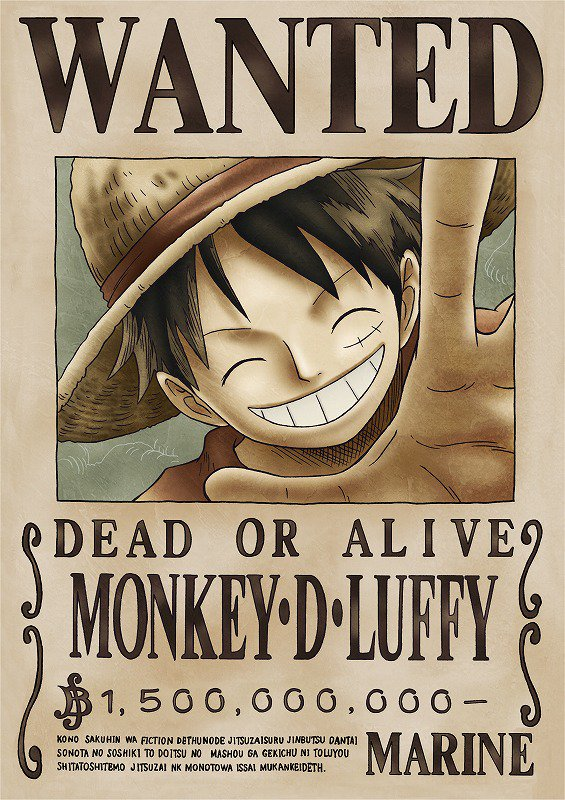
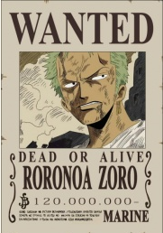
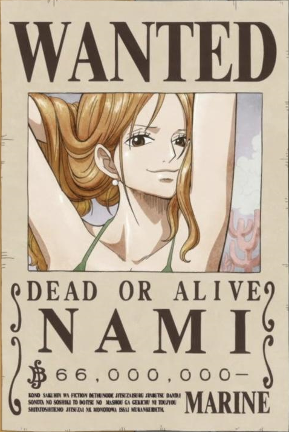
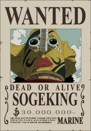
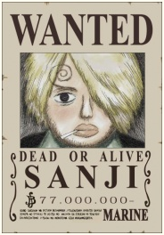
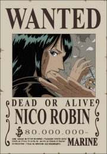
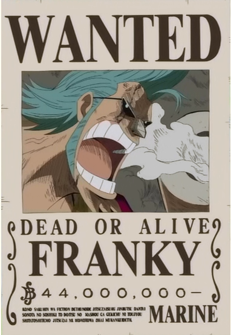
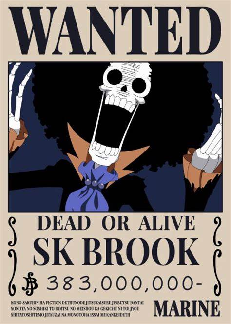
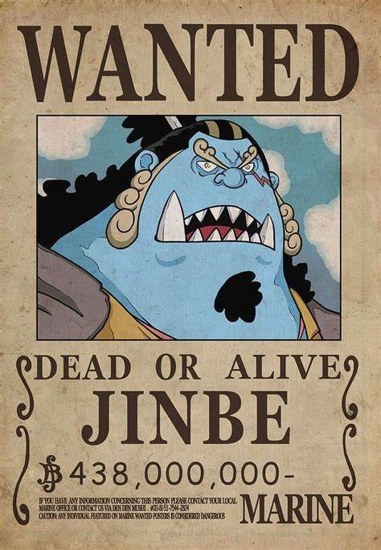

Site criado para falar do Mugiwaras, os melhores piratas do One Piece
Monkey D. Luffy
mais conhecido como "Luffy Chapéu de Palha" ou simplesmente "Chapéu de Palha", é o fundador, capitão e combatente mais forte dos cada vez mais infames e poderosos Piratas do Chapéu de Palha.
Ele busca destemidamente o lendário tesouro do falecido Gol D. Roger para se tornar o novo Rei dos Piratas,
e realizar um sonho ainda não revelado (atualmente conhecido apenas por sua tripulação e amigos mais próximos).
Ele acredita que ser o Rei dos Piratas significa ter a maior liberdade do mundo.
Roronoa Zoro
Roronoa Zoro, também conhecido como "Caçador de Piratas" Zoro, é o combatente dos Piratas do Chapéu de Palha e um ex-caçador de recompensas.
Ele foi o primeiro membro a juntar-se à tripulação. Sua fama como mestre espadachim e sua grande força,
juntamente com as ações de seu capitão, às vezes levaram os outros a acreditar que
ele era o verdadeiro capitão da tripulação antes deste obter sua primeira recompensa, enquanto algumas pessoas acreditam que ele seja o imediato.
Nami, a "Gata Ladra"
É a navegadora dos Piratas do Chapéu de Palha e uma dos Oficiais Seniores da Grande Frota do Chapéu de Palha. Ela é o terceiro membro da tripulação e a segunda a entrar, fazendo isso durante o Arco Orange Town. Ela é irmã adotiva de Nojiko depois que os dois ficaram órfãos e foram acolhidos por Bell-mère.
God Usopp
É o Atirador dos Piratas do Chapéu de Palha. Ele é o quarto membro da tripulação e o terceiro a entrar, fazendo isso no final do Arco Vila Syrup. Embora ele tenha deixado a tripulação durante o Arco Water 7, ele se juntou novamente ao final do Arco Pós-Enies Lobby.
"Perna Preta" Sanji
nascido como Vinsmoke Sanji, e também é o cozinheiro dos Piratas do Chapéu de Palha, assim como um antigo chefe de cozinha do Baratie. Ele também é o terceiro filho e a quarta criança da Família Vinsmoke, tornando-o um príncipe do Reino Germa, até que ele oficialmente os renunciou duas vezes. Apesar de Sanji renunciar ao seu sobrenome Vinsmoke, o Governo Mundial o rotula como parte de seu nome em seu pôster de procurado.
Tony Tony Chopper

é uma rena. Ele é o médico da tripulação dos Piratas do Chapéu de Palha. Chopper é uma rena que, após comer a Hito Hito no Mi, adquiriu a habilidade de se transformar e raciocinar como os humanos. Ele é o sexto membro e um dos poucos membros da tripulação que nasceu na Grand Line, numa ilha chamada Drum. Por ter sido confundido como mascote, a recompensa atual de sua captura é de apenas 1.000. Mesmo sendo considerado "Mascote" pela marinha, ele foi nomeado um dos comandantes do Luffy, sendo assim seguindo a lógica da sua recompensa o 9° Comandante.
Nico Robin
também conhecida como "Criança Demônio" e "Luz da Revolução", é a arqueóloga dos Piratas do Chapéu de Palha. Ela é a única sobrevivente da ilha destruída de Ohara, localizada no West Blue. Como resultado, ela é atualmente a única pessoa no mundo com a capacidade de ler e decifrar Poneglyphs, uma habilidade que é considerada proibida e que ameaça o Governo Mundial.
Franky
Ele é um cyborg de 36 anos de Water 7 e foi introduzido na história como o líder da Família Franky, um grupo de desmantelamento de navios. Ele foi originalmente chamado de "Cutty Flam" até trocar seu nome original por seu apelido a pedidos de Iceburg para esconder sua identidade. Franky e seus seguidores foram inicialmente introduzidos como antagonistas do Arco Water 7 contra os Chapéus de Palha até as circunstâncias forçá-los a se tornarem aliados.
Brook
é o Músico dos Piratas do Chapéu de Palha. Ele é um esqueleto que os Chapéus de Palha encontraram a bordo de um navio fantasma depois de entrarem no Triângulo Florian. Ele é um usuário de Akuma no Mi que comeu a Yomi Yomi no Mi, o que o torna um pseudo-imortal por causa de seus poderes. Ele é o nono membro do Bando do Chapéu de Palha, e o oitavo a se juntar à tripulação de Luffy.
"Cavaleiro do Mar" Jinbe
é o timoneiro dos Piratas do Chapéu de Palha. Ele é o décimo membro da tripulação e o nono a se juntar, fazendo isso durante o Arco País de Wano. Jinbe é um homem-peixe sendo um tubarão-baleia e um poderoso mestre do karatê Homem-Peixe. Seu sonho é realizar o desejo moribundo de seu ex-capitão Fisher Tiger de coexistência e igualdade entre humanos e homens-peixe.